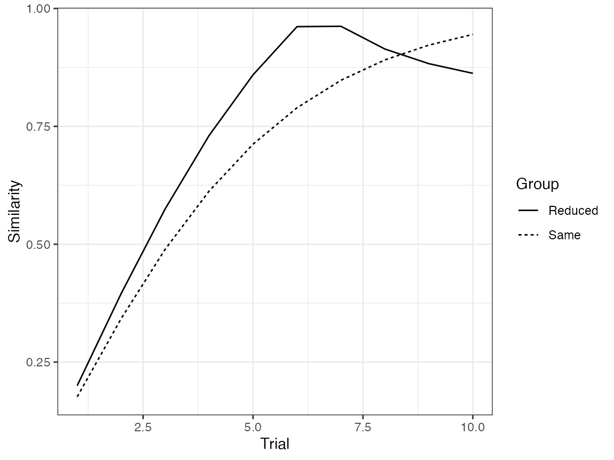
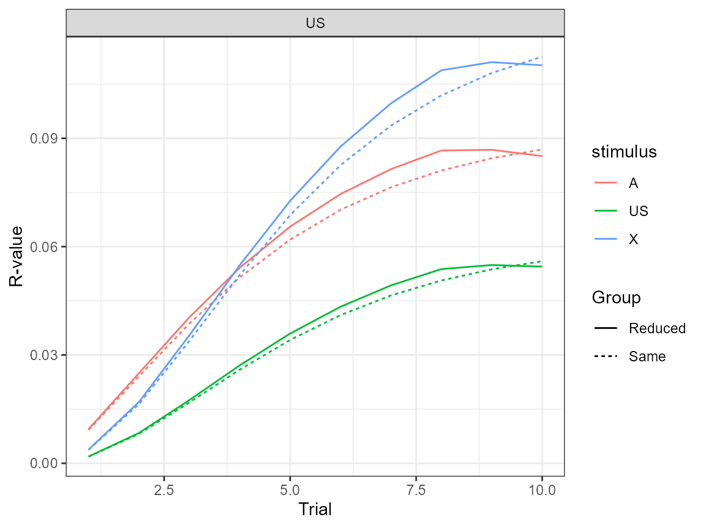

Simulating similarity effects
In Honey and Dwyer (2022), the authors propose that the similarity between the retrieved and nominal saliencies of stimulus representations modulates some quantities in the combination rule. Retrieved saliencies are exclusively for absent stimuli, and are the result of the existing associations between stimuli (see in Eq. 8 in math vignette). In contrast, nominal saliencies denote the intensity of stimulus representations when stimuli are actually presented on a trial (\(\alpha\)).
An intuitive example of the effect that saliency similarity has over responding refers to the effect that weakly retrieved representations have over behavior. The low similarity between a weakly retrieved representation and its nominal representation should result in a reduced effect of the former over behavior. For example, in a typical Pavlovian inhibition paradigm [A(US)/AX], an inhibitor (e.g., X) that has a strong effect over behavior when actually presented will only have a weak effect over behavior if weakly retrieved by a stimulus that has a strong association with it (e.g., A).
Yet, the inspiration for proposing such a general rule was fairly specific. It was an attempt to explain why the introduction of a delay between CS and US stimuli in higher-order conditioning experiments could sometimes enhance responding to the stimulus that was never paired with the US (e.g., A after AX/X(US) or X(US)/AX).
Reproducing the simulation presented in the paper
In the paper, the authors plot the similarity between the retrieved saliencies and the nominal saliencies for stimulus X during a sensory preconditioning experiment in which a short delay between X and the US was used (group Reduced) or not (group Same). The effect of introducing a delay was simulated as X having a saliency of .36; otherwise, its saliency was .40. The saliencies of A and the US were fixed to .30 and .50, respectively, for both conditions.
df <- data.frame(Group = c("Same", "Reduced"),
P1 = c("10A(X_a)", "10A(X_a)"),
R1 = c(FALSE, FALSE),
P2 = c("10(X_a)(US)", "10(X_b)(US)"),
R2 = c(FALSE, FALSE))
params <- data.frame(Stimulus = c("A", "X_a", "X_b", "US"),
Alpha = c(.30, .40, .36, .50))
model <- quick_model(df, params)Plotting the similarity between saliencies
This plot is not currently supported in the package, but it can be
easily generated by passing the \(A
\rightarrow X\) association as one of the alphas for the internal
function used to calculate the similarity
heidi:::.alphaSim.
model$vs %>% filter(s1 == "A" & s2 == "X" & phase == "P1") %>% #using only the first phase
mutate(nominal_alpha = ifelse(group == 'Reduced', mean(.36, .40), .40)) %>%
mutate(similarity = heidi:::.alphaSim(value, nominal_alpha)) %>%
ggplot(aes(x = trial, y = similarity, linetype = group)) +
geom_line() + theme_bw() +
labs(x = "Trial", y = "Similarity", linetype = "Group")
Note that the simulator does not save the state of the weights before trial 1. That’s why the plot does not start with a similarity of 0, as it is shown in the paper.
Plotting the distribution of responding
This one is a little bit trickier, because the figure in the manuscript effectively contains many experiments varying the number of XA trials before starting the first-order conditioning phase. To address this, we run multiple simulations with different experimental designs.
ntrials <- 1:10
df <- data.frame(Group = c(paste0("S", ntrials), paste0("R", ntrials)),
P1 = rep(paste0(ntrials, "A(X_a)"), 2),
R1 = FALSE,
P2 = rep(c("10(X_a)>(US)", "10(X_b)>(US)"), each = 10),
R2 = FALSE,
P3 = "A#",
R3 = FALSE)
params <- data.frame(Stimulus = c("A", "X_a", "X_b", "US"),
Alpha = c(.30, .40, .36, .50))
head(df)
#> Group P1 R1 P2 R2 P3 R3
#> 1 S1 1A(X_a) FALSE 10(X_a)>(US) FALSE A# FALSE
#> 2 S2 2A(X_a) FALSE 10(X_a)>(US) FALSE A# FALSE
#> 3 S3 3A(X_a) FALSE 10(X_a)>(US) FALSE A# FALSE
#> 4 S4 4A(X_a) FALSE 10(X_a)>(US) FALSE A# FALSE
#> 5 S5 5A(X_a) FALSE 10(X_a)>(US) FALSE A# FALSE
#> 6 S6 6A(X_a) FALSE 10(X_a)>(US) FALSE A# FALSERun the model.
model <- quick_model(df, params)And now we can manually plot the distribution of responding among
stimuli model$rs.
model$rs %>%
filter(phase == 'P3' & s2 == "US") %>%
mutate(trial = trial-11,
group_lab = ifelse(substr(group, 1, 1) == "R", "Reduced", "Same")) %>%
ggplot(aes(x = trial, y = value, colour = s1, linetype = group_lab)) +
geom_line() +
theme_bw() +
labs(x = "Trial", y = "R-value", colour = "Stimulus", linetype = "Group") +
facet_wrap(~s2)
Some final notes
In their paper, Honey and Dwyer do not completely specify the rules for choosing a reference value for the similarity calculation whenever more than one nominal stimulus has been experienced. For example, in the above simulation we use two nominal versions of the X stimulus (X_a and X_b), and so, whenever the model has to compute the similarity between retrieved (i.e., \(A \rightarrow X\)) and conditioned saliency values, we encounter the problem of having to choose among at least two conditioned values (X_a or X_b). Although the authors of the paper chose the saliency for the nominal X that was conditioned with the US (i.e., X_b), they do not specify how this choice should be made in other, less intuitive situations. As a way to avoid solving this issue, the current implementation of the similarity rule uses the average of the nominal stimuli as a reference value for the similarity calculation. For this specific simulation case, this implementation actually reduces the effect of similarity over the distribution of responding.